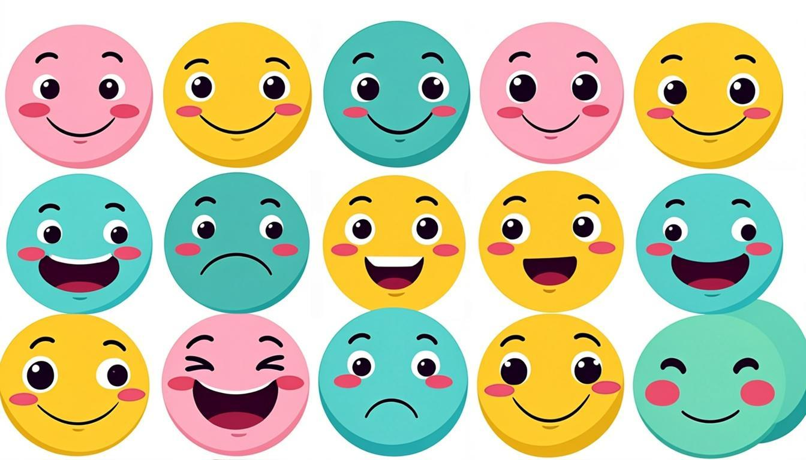

آموزش جامع درس اول Prospect 3: گفتوگو، صفتهای شخصیت، گرامر to be و تلفظ
آموزش جامع و تصویری Lesson 1 کتاب Prospect 3 (پایه نهم): گفتوگوی Personality، واژگان صفتهای شخصیت، دو الگوی گفتاری Practice، نگارش توصیف دوست و نکات آزمون — با ترجمهٔ فارسی سطربهسطر و کاربرگ تمرین.
بهکارگیری الگوی بله/خیر: Are you hard-working? — Yes, I am. / No, I'm not.
معرفی اعضای خانواده و دوستان با صفتهای مناسب
خواندن و درک متن Reading (شخصیتها در تصویرها)
🧭 پیشنیازها
صفتهای ساده و افعال to be (am/is/are) از Prospect 1 و 2
ضمیرهای شخصی I, you, he, she, we, they
مهارت گوش دادن به گفتوگوی کوتاه
گفتوگوی درس (Conversation) — ترجمه و تحلیل
✏️ متن گفتوگو + ترجمهٔ فارسی
Ehsan: Who is your best friend at school? — بهترین دوستت در مدرسه کیست؟
Parham: Reza. — رضا.
Ehsan: What's he like? — اهل چطور آدمی است؟ / اخلاقش چطور است؟
Parham: Oh, he is really great! He's clever and kind. — اوه، واقعاً عالی است! باهوش و مهربان است.
Ehsan: Is he hard-working too? — سختکوش هم هست؟
Parham: Yes! And he's always very helpful. — بله! و همیشه خیلی کمکحال است.
Ehsan: How? — چطور؟
Parham: He always helps me with my lessons. — همیشه در درسهایم به من کمک میکند.
حل گامبهگام:
نکتهٔ ساختاری مهم: What + is + فاعل + like? برای پرسش دربارهٔ شخصیت/خلقوخوا است؛ نه ظاهر! برای ظاهر میپرسیم: What does he look like?
در پاسخ، صفت با فعل to be میآید: He's clever and kind.
💡 نکته
هشدار ترجمه: «What's he like?» را با «What does he like?» (او چه چیزی دوست دارد؟) اشتباه نگیرید! اولی دربارهٔ شخصیت است، دومی دربارهٔ علاقهها. تفاوت فقط در یک کلمهٔ کوچک (does) است ولی معنا کاملاً عوض میشود.
گفتوگوی دو همکلاسی؛ صحنهٔ اصلی Practice و Conversation درس
واژگان کلیدی درس (Personality Adjectives)
صفت
تلفظ ساده
معنی
متضاد
clever
کِلِوِر
باهوش، زیرک
silly
kind
کایند
مهربان
unkind / rude
hard-working
هارد-ورکینگ
سختکوش، زحمتکش
lazy
helpful
هِلپفول
کمکحال
unhelpful
funny
فانی
بامزه
serious
serious
سیریِس
جدی
funny
quiet
کوایِت
کمحرف، آرام
talkative
patient
پِیشِنت
صبور
impatient
🚀 ترفند طلایی
صفتها را با «یک دوست واقعی» به خاطر بسپارید: برای هر صفت، نام یک آدم واقعی بنویسید (My grandmother is patient). مغز از حافظهٔ انسانی سریعتر از حافظهٔ لغتنامه بازی میکند.
الگوهای گفتاری درس (Practice 1 و 2)
الگوی ۱: پرسش با Wh — «اهل چطور آدمی است؟»
ساختار پرسشوپاسخ الگوی اول؛ دقت کنید صفت بعد از فعل to be میآید
الگوی ۲: پرسش بله/خیر — «سختکوش هست؟»
✏️ کوتاهپاسخی مثل کتاب
Are you hard-working? — Yes, I am. / No, I'm not.
Is he helpful? — Yes, he is. / No, he isn't.
Are they kind? — Yes, they are. / No, they're not.
حل گامبهگام:
قاعدهٔ طلایی: در کوتاهپاسخی، از شکل خلاصهشده استفاده میکنیم و صفت را تکرار نمیکنیم.
جواب منفی رسمی: No, she isn't. جواب منفی عامیانهٔ کتاب: No, they're not. هر دو درستاند.
با he/she از is و با you/we/they از are استفاده کنید؛ با I همیشه am.
بخشهای دیگر درس و تکنیکهای پاسخ
Speaking — معرفی شخصیت اعضای خانواده
در بخش گفتاری، از شما میخواهند اعضای خانواده را با صفت معرفی کنید. قالب سهجملهایِ امن: (۱) نام و نسبت (۲) یک صفت اصلی + یک توضیح (۳) یک مثال کوچک. مثال: «My sister is funny. She always tells jokes. She makes our family laugh.» همین الگوی ساده، نمرهٔ کامل Speaking را میگیرد.
Writing — توصیف یک دوست
در نگارش درس، ۴–۶ جمله دربارهٔ بهترین دوست خود بنویسید. چکلیست نمرهگیری: استفاده از حداقل ۴ صفت درس، فعل to be درست، یک جملهٔ مثال (He always...), و علامتگذاری صحیح. پیشنویس را اول فارسی فکر کنید، بعد کلیدواژههای انگلیسی بنویسید و در آخر جملهها را وصل کنید.

چهرهها و شخصیتها؛ تقویت حافظهٔ تصویری صفتها
✏️ نمونهٔ پاسخ Writing (سطح ۲۰ از ۲۰)
My best friend is Amir. He is really clever and hard-working. He always helps me with my English homework. Amir is also very funny; he makes everyone laugh. I'm lucky to have a kind and helpful friend like him.
حل گامبهگام:
تحلیل نمونه: ۵ جمله، ۵ صفت درسی (clever, hard-working, funny, kind, helpful)، ساختار to be درست، و یک جملهٔ مثال با always. این دقیقاً الگوی مورد انتظار کتاب است.
خطاهای رایج و نکات آزمون
What's he like? ≠ What does he like? — شخصیت در برابر علاقه؛ در آزمون بیشترین دام است.
He's = He is؛ در نوشتار رسمی امتحانی هر دو پذیرفته است، اما مخفف را جدا از فعل نپاشید (He's clever ✔).
صفت جمع نمیشود: a clever students ✗ → clever students ✔
patient (صبور) و patient (بیمار) همنویسهاند؛ از بستر جمله معنا را بفهمید.
در کوتاهپاسخی، حتماً ضمیر را با فعل هماهنگ کنید: Are they...? → Yes, they are. (نه Yes, he is.)
کاربرگ تمرین در خانه
🗂 کاربرگ تمرین در خانه
1برای ۵ عضو خانواده یک جملهٔ توصیف با صفت بنویسید (My father is ...).
2گفتوگوی ۶ سطری جدید با الگوی What's ... like? بنویسید و با همکلاسی اجرا کنید.
3جدول دوستونی بسازید: ۸ صفت درس + متضاد هر یک.
4پاراگراف ۵ جملهای دربارهٔ بهترین دوستتان با چکلیست درس بنویسید.
5متن Conversation را دو بار بلند بخوانید و ضبط کنید؛ تلفظ patient و hard-working را با دیکشنری صوتی بسنجید.
تفاوت What's he like? با What does he like? را هرگز فراموش نکنید.
🎓 راهنمای تدریس (معلم و اولیا)
تدریس پیشنهادی ۴ جلسه: جلسهٔ ۱ اجرای مکالمهٔ کتاب با نقشآفرینی و بلندخوانی الگوها؛ جلسهٔ ۲ کارت صفتها + بازی «حدس شخصیت» (یک دانشآموز صفت را اجرا میکند، بقیه حدس میزنند)؛ جلسهٔ ۳ کارگاه Writing با چکلیست و بازخورد دوستانه؛ جلسهٔ ۴ آزمون گفتاری دو نفره (۲ دقیقه) + حل بانک نمونه سوالات. برای کلاسهای ضعیفتر، ابتدا فقط ۴ صفت را تثبیت کنید.
Final Note — پیام پایانی
💡 نکته
زبان با «استفاده» یاد گرفته میشود، نه با نگاهکردن: هر روز ۵ دقیقه بلند حرف بزن، یک جمله دربارهٔ یک نفر بنویس و یک کارت صفت مرور کن. Lesson 1 را خوب بساز تا کل Prospect 3 روی همین ستون بایستد. You can do it! 🌟
Extra Practice Bank — More Exercises with Answers
📝 B1 — Choose
My grandmother always waits calmly. She is .......... . (serious / patient / funny)
پاسخ:
patient — «calmly waiting» نشانهٔ صبر است.
📝 B2 — Choose
Reza makes us laugh all the time. He is so .......... . (quiet / funny / hard-working)
پاسخ:
funny — «makes us laugh» تعریف مستقیم بامزه بودن است.
📝 B3 — Complete the dialogue
A: .......... is your brother ..........? B: He's clever and a bit serious.
پاسخ:
A: What's your brother like? — الگوی Wh-question درس.
📝 B4 — Short answers
Are your classmates helpful? (✔)
پاسخ:
Yes, they are. — ضمیر جمع they + are؛ صفت تکرار نمیشود.
📝 B5 — Correct the mistake
«My friends is very kind and funny.»
پاسخ:
My friends are very kind and funny. — فاعل جمع، فعل are میخواهد.
📝 B6 — Translate
«خواهر من کمکحال و صبور است.»
پاسخ:
My sister is helpful and patient. — دو صفت با and؛ ترتیب آزاد است.
Word Map — شبکهٔ واژگان شخصیت
Positive 🙂
Negative 😐
Related expression
kind
rude
be kind to somebody
helpful
unhelpful
help someone with something
hard-working
lazy
work hard
funny
serious
make someone laugh
clever
silly
good at lessons
patient
impatient
wait calmly
Speaking Lab — سناریوهای ۶۰ ثانیهای
Scenario 1: دوست جدید مدرسه از شما میپرسد: «What's your best friend like?» — ۴ جمله پاسخ دهید (نام، دو صفت، یک مثال).
Scenario 2: معلم میپرسد: «Are you hard-working?» — پاسخ صادقانه + دلیل (Yes, I am. I always ...).
Scenario 3: برادر کوچکت را توصیف کن؛ یک صفت مثبت و یک نکتهٔ بامزه بگو.
💡 نکته
قاعدهٔ امتیاز Speaking: روانی > دقت کامل. اگر وسط جمله گیر کردید، با «I mean...» ادامه دهید؛ توقف طولانی بیش از یک غلط کوچک نمره کم میکند.
تقویم مطالعهٔ یکهفتهای Lesson 1
روز
تمرکز
کار ۱۵ دقیقهای
شنبه
Conversation + تلفظ
ضبط صدای گفتوگو و مقایسه با الگو
یکشنبه
۸ صفت + متضادها
کارتهای واژه + بازی حدس
دوشنبه
الگوی What's ... like?
۱۰ پرسشوپاسخ نوشتاری
سهشنبه
الگوی بله/خیر
کوتاهپاسخی برای ۸ پرسش
چهارشنبه
Writing پاراگراف
نوشتن + چکلیست ۴ موردی
پنجشنبه
کاربرگ کتاب کار
تمرینهای واژگان و تصویرها
جمعه
مرور شفاهی
تدریس الگو به یکی از اعضای خانواده
پروژهٔ خلاقانه: «کارتپستال شخصیتها»
برای ۵ نفر از نزدیکانتان یک کارتپستال انگلیسی بسازید: تصویر (نقاشی یا عکس) + ۳ جملهٔ توصیف با صفتهای درس (مثلاً: My grandmother is kind and patient. She always tells beautiful stories.) کارتها را هدیه دهید! زبان واقعی برای آدمهای واقعی، ماندگارترین یادگیری است. بهترین کارت کلاس، روی دیوار انگلیسی مدرسه میرود.
🎓 راهنمای تدریس (معلم و اولیا)
ارزیابی گفتاری پیشنهادی: آزمون دونفرهٔ ۲ دقیقهای با روباتیکنشدن پرسشها (از جدول واژگان، تصادفی بپرسید). چکلیست: الگوی درست What's...like? / تطابق to be / حداقل ۳ صفت درس. برای ترسِ گفتار، دو هفتهٔ اول اجازهٔ خواندن از برگه بدهید و قدمبهقدم حذف کنید.
Grammar Corner — فعل to be و ضمیرها
ستون فقرات این درس، فعل to be است. پیش از هر تمرینی، این جدول را کامل مسلط کنید؛ ۹۰٪ غلطهای Lesson 1 از ناهماهنگی ضمیر و فعل میآید.
Subject
To be
Short form
Example
I
am
I'm
I'm hard-working.
He / She / It
is
He's / She's
She's patient.
You / We / They
are
You're / They're
They're funny.
📝 G1 — Fill in
My brothers .......... clever, and my sister .......... very funny.
پاسخ:
are / is — جمع با are، مفرد با is.
📝 G2 — Negative
شکل منفی و کوتاهپاسخیِ این جمله را بنویسید: «They are quiet.»
پاسخ:
منفی: They're not quiet. / They aren't quiet. کوتاهپاسخی: No, they aren't. (یا No, they're not.)
📝 G3 — Question order
مرتب کنید: like / your / what's / friend / ?
پاسخ:
What's your friend like? — ترتیب: کلمهٔ پرسشی + فعل + فاعل.
Pronunciation Guide — تلفظهای پرخطا
Word
تلفظ ساده
توجه
personality
پِرسانالِتی
فشار روی «نا»ی سوم
hard-working
هارد-وِرکینگ
دوکلمهای؛ «وِر» نه «وار»
patient
پِیشِنت
ت خوانده نمیشود
serious
سیریِس
سه بخش: سی-ری-ِس
quiet
کوایِت
با quite (کوایت) اشتباه نشود!
💡 نکته
quiet و quite فقط یک حرف با هم فرق دارند اما معنیشان کاملاً متفاوت است: quiet = کمحرف، quite = کاملاً. در امتحان شنیداری این دو را از آهنگ جمله تشخیص دهید.
Practice Bank 2 — تمرینهای ترکیبی
📝 C1 — Reading
«My uncle never gets angry. He listens to everyone patiently.» او چگونه آدمی است؟ یک صفت بنویسید و دلیل بیاورید.
پاسخ:
He is patient. — «never gets angry» و «listens patiently» نشانههای صبوریاند.
📝 C2 — Dialogue writing
گفتوگوی ۶ سطری بنویسید که در آن یک بار What's she like? و یک بار Is he funny? به کار رود.
پاسخ:
نمونه: A: Who is your English teacher? B: Mrs. Ahmadi. A: What's she like? B: She's kind and clever. A: Is her class funny? B: Yes, it is! We laugh a lot.
📝 C3 — Personality map
برای خودتان سه صفت مثبت و یک صفت «در حال تلاش» بنویسید (I am... . I'm a bit... and I want to be more...).
پاسخ:
نمونه: I am hard-working and kind. I'm a bit quiet and I want to be more funny. — این ساختار برای مکالمهٔ اول سال عالی است.
یادگیری سفر است؛ هر تمرین، یک گام تا تسلط.
این جزوه بر پایهٔ کتاب درسی رسمی پایه نهم (سازمان پژوهش و برنامهریزی آموزشی، سال ۱۴۰۵–۱۴۰۶) تهیه شده است. موفق باشید! 🌟